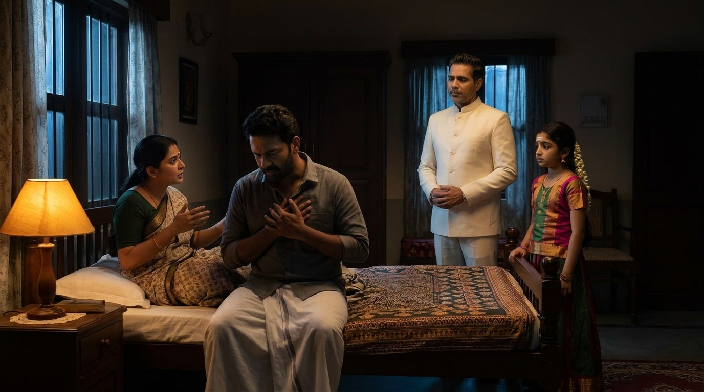
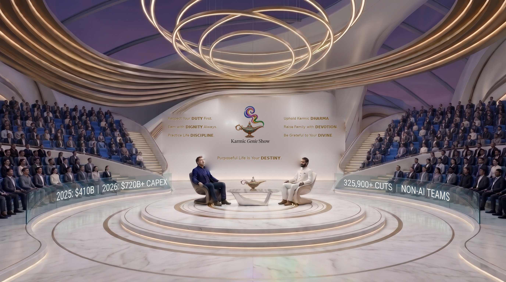
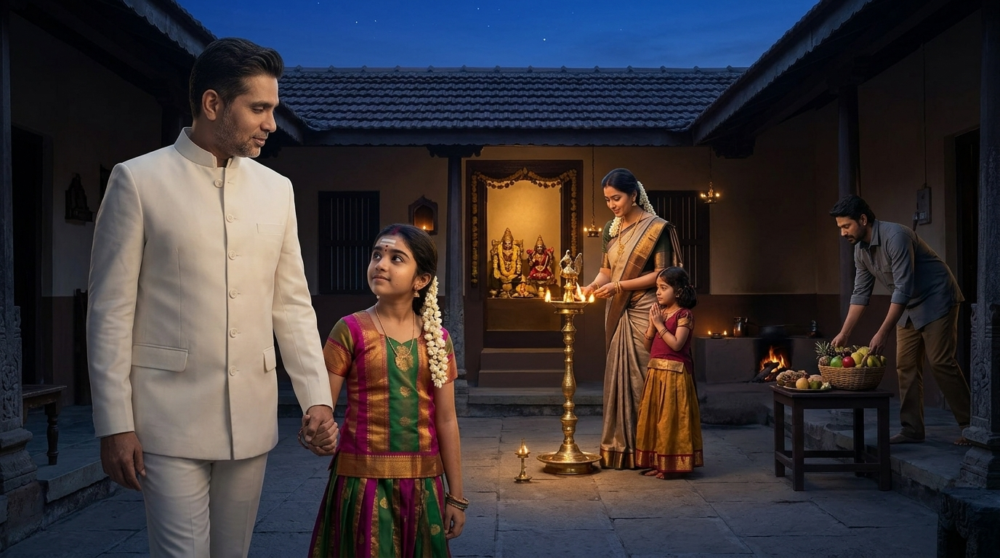
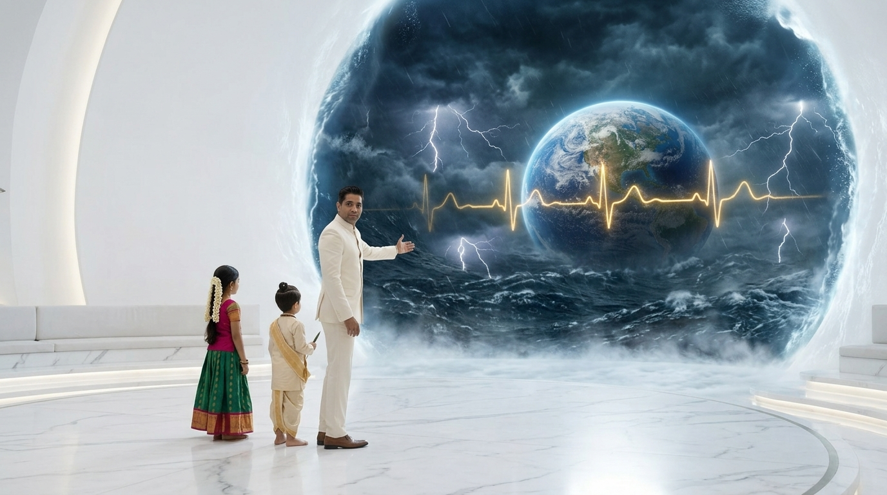
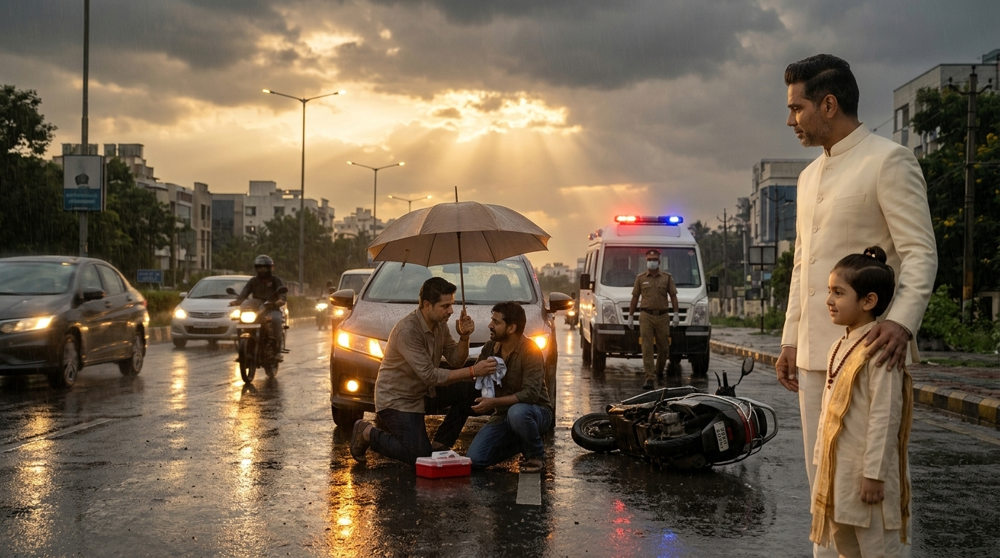
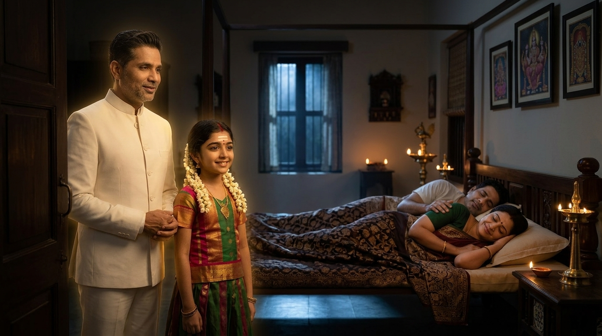
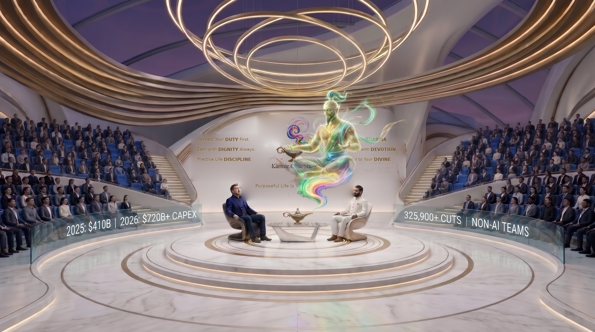

🎬 S01E01 “1. Respect Your DUTY First.” — Full 48-Shot Epic Movie (16:9 Cinema)
bash pipeline/run_s01e01_duty_first_end_to_end.sh
or remote GPU via python3 pipeline/colab_cli_s01e01_runner.py --render-gpu
The Sacred Trinity Master Avatars (Attach Me Avatar + 1 Speaking Child in Movie Scenes)

1. Host @Me Avatar (Master Likeness)
Exact face, swept-back hair & salt-and-pepper stubble in tailored ivory-white bandhgala suit. Attached via Avatars → Me → Add to prompt.

2. 4yo Bala-Rishi (Jnana / Truth Companion)
Top-knot bun, Urdhva Pundra tilak, Rudraksha mala, cream silk kurta. Paired with @Me in Scenes 01, 04, 06, 10.

3. Bala-Matha (Arul / Conscience Companion)
Magenta-green silk pattu pavadai, vibhuti mark, white jasmine garlands. Paired with @Me in Scenes 02, 05, 07, 09, 11.
Scene 01: Day 1 vs. Day 2 Monsoon Scooter Accident (3D Bullet-Time Time-Pause)
Setting: Rain-slicked dusk suburban bend in South India; frozen raindrops & amber brake-light reflections.
In-Scene Cast: Commuter driver Raghav, fallen scooter rider, Narrator @Me (ivory bandhgala) + 4yo Bala-Rishi.
Two-Birds Blocking: NARRATOR + 1 CHILD (Bala-Rishi): @Me and 4yo Bala-Rishi walk calmly through suspended raindrops beside the open sedan door and wounded scooter rider.
Cinematic Mechanic: [SCENE TIME-PAUSE] freezes the monsoon drizzle right as Raghav considers driving away after causing the minor clip.


SCENE 02 • ACT I — CONSCIENCE AWAKENS (Page 2) 🕊️ NARRATOR + 1 CHILDScene 02: 2:30 AM Sleepless Guilt & The Wife's Mirror ('You Should Have Helped Him!')
Setting: Moonlit South Indian bedroom at 2:30 AM with warm amber bedside lamp.
In-Scene Cast: Sleepless Raghav, his wife Ananya, Narrator @Me + Bala-Matha.
Two-Birds Blocking: NARRATOR + 1 CHILD (Bala-Matha): @Me and Bala-Matha stand quietly in soft golden conscience light by the bedpost as Ananya speaks the piercing truth.
Cinematic Mechanic: Intimate psychological stillness contrasting Day 1's effortless sleep with Day 2's burning guilt.


SCENE 03 • ACT I — STUDIO PORTAL (Page 2) 🕊️ NARRATOR + 1 CHILDScene 03: White-Wall Zoom-Out to The Karmic Genie Show Circular Marble Stage
Setting: Pure-white circular marble amphitheater with brushed-gold '1. Respect Your DUTY First.' inscription & dormant gold Genie lamp.
In-Scene Cast: @Me, 4yo Bala-Rishi, and Bala-Matha on the central marble stage.
Two-Birds Blocking: The Sacred Trinity welcomes the audience and defines True Duty as the task whose neglect awakens guilt inside Conscience (Manasatchi).
Cinematic Mechanic: [WHITE-WALL ZOOM-OUT] from bedroom window straight onto the luminous circular marble stage.

Scene 04: Banyan, Bee & River (100% Duty) + Age 4 Barefoot Outdoor Play
Setting: Golden sunlit sacred Banyan tree with aerial roots, lotus honeybees, and crystal river puddles.
In-Scene Cast: 4-year-old child splashing barefoot in golden puddles, Narrator @Me + 4yo Bala-Rishi.
Two-Birds Blocking: NARRATOR + 1 CHILD (Bala-Rishi): @Me and Bala-Rishi walk barefoot along the sunlit riverbank right beside the playing 4-year-old child.
Cinematic Mechanic: [WHITE-WALL ZOOM-IN] into living nature showing 100% unapplauded duty across Banyan, Bee, River, and Childhood Play.


SCENE 05 • ACT II — HOUSEHOLDER ILLARAM (Page 5) 🕊️ NARRATOR + 1 CHILDScene 05: Sacred Family Duty: Father's 50% Spotless Porul & Mother's 50% Arul Pooja Lamp
Setting: Traditional-modern South Indian courtyard home at twilight glowing with a brass Kuthuvilakku oil lamp.
In-Scene Cast: Mother lighting the sacred Pooja lamp with child, Father arriving warmly with honest provision, Narrator @Me + Bala-Matha.
Two-Birds Blocking: NARRATOR + 1 CHILD (Bala-Matha): @Me and Bala-Matha walk gently through the courtyard beside the glowing Kuthuvilakku lamp.
Cinematic Mechanic: Warm golden oil-lamp illumination revealing why loving Family Life (Karma Margam / Illaram) is both safest and fastest for Soul Growth.

Scene 06: Things ONLY YOU Can Do (Scene 1 of 7): Being Father to Your Own Child
Setting: Rain-washed sunlit cobblestone tree-lined walkway in golden afternoon light.
In-Scene Cast: 5-year-old boy sprinting into his kneeling father's open arms, Narrator @Me + 4yo Bala-Rishi.
Two-Birds Blocking: NARRATOR + 1 CHILD (Bala-Rishi): @Me and Bala-Rishi walk in stride right beside the joyful reunion.
Cinematic Mechanic: Slow-motion emotional embrace proving 'Only You Can Do' is sacred responsibility, never arrogance.

Scene 07: Things ONLY YOU Can Do (Scene 3 of 7): Kneeling Before Your Aging Parents
Setting: Warm pillared ancestral veranda at golden sunset with brass lantern glow.
In-Scene Cast: 40-year-old son holding his 78-year-old father and mother's hands, Narrator @Me + Bala-Matha.
Two-Birds Blocking: NARRATOR + 1 CHILD (Bala-Matha): @Me and Bala-Matha walk softly beside the carved teak veranda pillars.
Cinematic Mechanic: Golden sunset glow illuminating tears of parental joy that bank transfers alone can never buy.


SCENE 08 • ACT III–IV — WHITE-WALL PORTAL & DAILY TIME LAW (Pages 7–9) 🕊️ NARRATOR + 1 CHILDScene 08: White-Wall Portal Transition: Duty First -> What Only You Can Do -> Nothing Else
Setting: Luminous curved white marble Karmic Genie Show portal opening into lived human dharma.
In-Scene Cast: @Me, 4yo Bala-Rishi, and Bala-Matha before the glowing White Wall aperture.
Two-Birds Blocking: @Me proclaims the Iron Daily Law of Human Time before stepping back through the White Wall.
Cinematic Mechanic: [WHITE-WALL PORTAL] bridging the 7 'Only You Can Do' scenes with 'Respect Everyone Else's Duty'.

Scene 09: Dawn Boulevard Namaste: Honoring the Street Cleaner & Night Watchman
Setting: Golden sunrise tree-lined Indian avenue bathed in volumetric morning rays.
In-Scene Cast: Car commuter bowing in respectful Namaste to an elderly municipal street cleaner, Narrator @Me + Bala-Matha.
Two-Birds Blocking: NARRATOR + 1 CHILD (Bala-Matha): @Me and Bala-Matha pause the honking hand, then smile beside the mutual Namaste bow.
Cinematic Mechanic: [SCENE TIME-PAUSE] freezes the impatient horn before transforming arrogance into mutual reverence.


SCENE 10 • ACT V — PUBLIC DUTY & REDEMPTION IN THE RAIN (Pages 11–12) 🕊️ NARRATOR + 1 CHILDScene 10: Day 2 Rewind: Stopping in the Rain to Bandage & Help the Wounded Stranger
Setting: Dusk rain-wet avenue as golden sunset rays break through parting monsoon clouds; hazard lights & ambulance arriving.
In-Scene Cast: Raghav kneeling with umbrella and first-aid cloth tending the injured scooter rider, Narrator @Me + 4yo Bala-Rishi.
Two-Birds Blocking: NARRATOR + 1 CHILD (Bala-Rishi): @Me rests a warm hand on Bala-Rishi's shoulder right beside the redemptive roadside rescue.
Cinematic Mechanic: Golden storm-break rewind transforming Day 2's guilty flight into courageous public duty.


SCENE 11 • ACT V — THE REWARD OF CONSCIENCE (Page 12) 🕊️ NARRATOR + 1 CHILDScene 11: The Full-Chest Sigh of Relief & A Blissful Good Night's Sleep
Setting: Serene lamp-lit South Indian bedroom at night filled with tranquil peace.
In-Scene Cast: Raghav and Ananya sleeping deeply and peacefully with gentle smiles, Narrator @Me + Bala-Matha.
Two-Birds Blocking: NARRATOR + 1 CHILD (Bala-Matha): @Me and Bala-Matha smile softly in gentle golden conscience glow near the bedroom doorway.
Cinematic Mechanic: Warm lullaby glow illustrating how Conscience rewards completed duty with a sigh of relief and unbroken sleep.


SCENE 12 • ACT VI–VII — KARMIC GENIE SUMMONS & PILLOW TEST FINALE (Pages 13–14) 🕊️ NARRATOR + 1 CHILDScene 12: Awakening the Celestial Maharishi Karmic Genie & The 35/70 Pillow Test
Setting: Grand pure-white circular marble stage with golden-sapphire stardust & Celestial Maharishi Karmic Genie.
In-Scene Cast: Cross-legged Celestial Maharishi Karmic Genie, @Me, 4yo Bala-Rishi, and Bala-Matha.
Two-Birds Blocking: Full Sacred Studio Finale locking '1. Respect Your DUTY First.' in radiant gold and previewing Virtue #2 ('Earn with DIGNITY Always').
Cinematic Mechanic: Golden-sapphire stardust emergence from the center lamp + 5-Question Tonight Pillow Test.

@Me + 1 Child Rule🎬 S01E01 “1. Respect Your DUTY First.” — 14-Page Screenplay & 48-Shot Google Flow Pipeline

1. Active In-Scene Narrator ("Two Birds" Kinetic Mirroring)
Living Inside the Movie: As Kenji and ICU doctors sprint down the blackout corridor pushing Maya's crash cart, Host (@Me) and Bala-Rishi sprint effortlessly step-for-step right beside them inside the frame, looking straight into the lens to narrate when the characters are silent.

2. The 3D Bullet-Time Time-Pause Mechanic
[SCENE TIME-PAUSE]: At peak action, the movie freezes in mid-air. Raindrops, lightning sparks, and falling tears hang motionless while @Me, Bala-Rishi (tracing the 40Hz heart-grid with his neem stylus), and Bala-Matha walk calmly among the frozen characters to explain the deep details.

3. The White Wall Cinema Transposition
The seamless curved white stadium wall dissolves into an infinite IMAX cosmic storm. The camera zooms deep through the wall to enter the living movie.

4. Cold Open: Synchronized Metropolitan Blackout
Tokyo ICU pediatric flatline at 23:11:11 UTC triggers a worldwide chain reaction across Silicon Valley, the Red Sea, and Vidarbha as Mother Earth holds her breath.

5. The Breakout: Zooming Out to the White Stage
Camera pull-back through the white aperture, where the acting human bird (Jivatma) finally looks up and meets the Witness bird (Paramatma) face-to-face.
How the 3 Narrators Live, Move & Pause Time Inside the Movie
🎙️ Host (@Me) — Systemic & Executive Thresholds
Appears in high-stakes human and systemic thresholds: sprinting beside Kenji in the Tokyo ICU corridor, climbing the 400kV steel pylon rung-for-rung beside lineman Arjun in Prayagraj, and bracing behind the cockpit yoke of Flight 808 in an Alpine blizzard.
🌿 Bala-Rishi (4yo, Jnana) — Cleanrooms & Time-Freeze Math
Appears when cutting through corporate and scientific illusion: jogging beside Alan Stamm in the Silicon Valley quantum vault, and tapping his neem-wood stylus to freeze 220,000°C EUV plasma explosions in mid-air to draw the 40Hz & 280-month embryological math.
🌸 Bala-Matha (4yo, Arul) — Soil, Grief & Sacred Nandri
Appears in moments of raw human grief, soil, and healing: walking barefoot and kneeling in the cracked Vidarbha mud beside farmer Ramesh and Vishan Davana, pausing time to touch a father's suspended tear, and offering 100% Nandri to every worker of the old world.
Cold Open: The Sprint & Bullet-Time Spark
As Kenji sprints with Maya's crash cart, Host @Me sprints right beside him. When the defibrillator fires at 23:11:11 UTC, TIME PAUSES: the blue spark and Kenji's tear freeze in mid-air as @Me, Bala-Rishi, and Bala-Matha walk between the frozen doctors to reveal the Two Birds of the Upanishad.
Act I: In-Scene Blocking Across 4 Crises
Through the White Wall Zoom Portal, the 3 Narrators match the physical motion of the 5 Architects across Silicon Valley, the Red Sea typhoon, the Prayagraj 400kV grid, and Vidarbha's monsoon fields—narrating what the characters cannot see when they are silent.
Act II: Time-Pause Deep Dives & The Great Sync
Bala-Rishi freezes EUV tin-plasma explosions and trading floor margin calls in mid-air to expose the 57-organ autoimmune fallacy and Pitru Loka debt clock, while Bala-Matha's Nandri inspires the 5 Architects to surrender their silos into the 40Hz planetary heartbeat.
Act III: Breakout & 2050 Singularity
When the characters finally look up and see the Witness Narrators walking beside them, all sorrow dissolves. The White Wall opens into the 360° Living Honeycomb City of 2050—magnetic levitation skyways, perpetual self-powering homes, and ageless 528Hz frequency health.

The Ideal Honeycomb City (Aerial Mandala)
Center is the Unified Soul Platform (Sanctuary of Soul), surrounded by 6 functional district petals (Agriculture, Infrastructure, Business, Energy, Logistics, Economic).

7-City Regional Fractal Cluster
7 Honeycomb cities interconnected by frictionless subterranean vacuum maglevs into 1 balanced regional organ, scaling directly to the Unified Planet Council.
Everything Researched Today is the Pilot for 2050
Old ways long gone—no asphalt, no rubber tires, no fossil smog, no utility bills, no toxic synthetic medications. All ultra-natural yet hyper-scientific.

1. Magnetic Floating & Near-Flying Vehicles
Zero Asphalt, Zero Rubber Tires: Silent floating passenger pods gliding 1-3m above turf. 100% freight moved via subterranean pneumatic vacuum tubes.

2. The Living Home That Powers Itself
Perpetual Quantum Batteries: Cycles indefinitely with zero degradation. Biomimetic solar skin generates 200% power. Pure atmospheric water condensers. Zero utility bills forever.

3. Frequency Healthcare: Age Does Not Age
Radiant Cellular Vitality: Cellular telomere tuning via acoustic and photonic frequencies. Microfluidic ancient Siddha botanical delivery. Illness corrected before physical manifestation.
| District Hub | Platform | Honeycomb Location | Governing Principle & Physical Function |
|---|---|---|---|
| District 7 (Center) | Unified Soul Platform (USP) | Central Hexagon (Nucleus) | Sanctuary of Conscious Stillness, 7D virtue academies, silent reflection pools, intergenerational elder council. |
| District 1 | Unified Agriculture Platform (UAP) | North-West Petal | Every farmer is an employee of the Unified Planet. Syntropic food forests, municipal composting, heirloom seeds, zero chemicals. |
| District 2 | Unified Infrastructure Platform (UIP) | North-East Petal | Hardware (heavy manufacturing/civil/silicon foundry) & Software (OS/protocols/compute infrastructure). |
| District 3 | Unified Business Platform (UBP) | East Petal | All business software registered in one place; 100% public read-only transparency for all citizens. |
| District 4 | Unified Energy Platform (UEP) | South-East Petal | Life is energy, sustenance is energy. Concentrated solar petals, deep geothermal, perpetual quantum battery vaults. |
| District 5 | Unified Logistics Platform (ULP) | South-West Petal | All forms of vascular movement. Automated maglev freight yards, subterranean pneumatic cargo tubes, floating delivery gliders. |
| District 6 | Unified Economic Platform (UEcP) | West Petal | Exchange of products for services; Unified Banking; central credit pool. Repay through duty (Seva) when ready without pressure. |